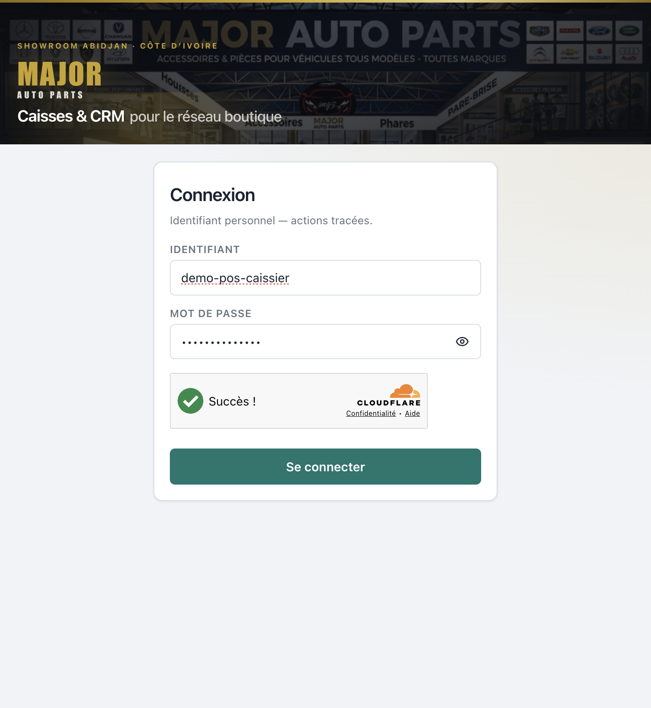
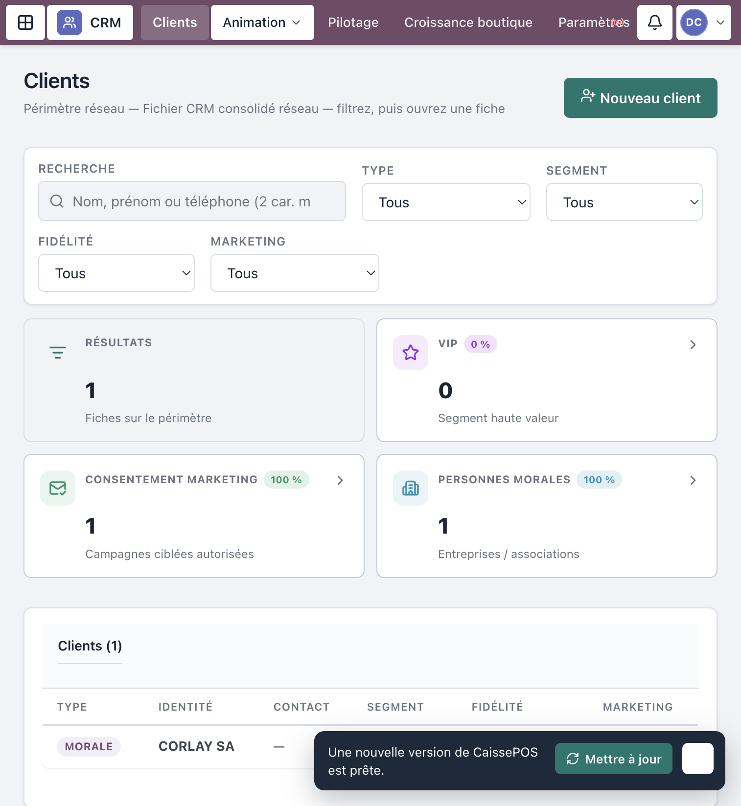
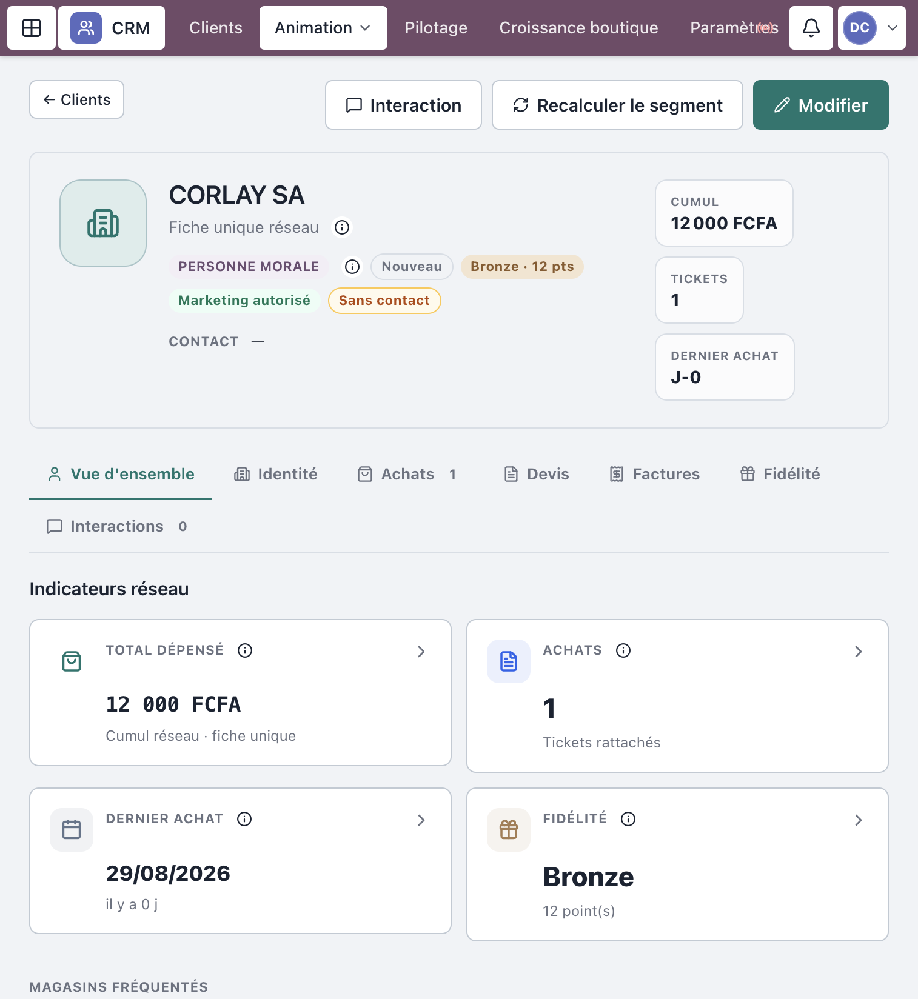
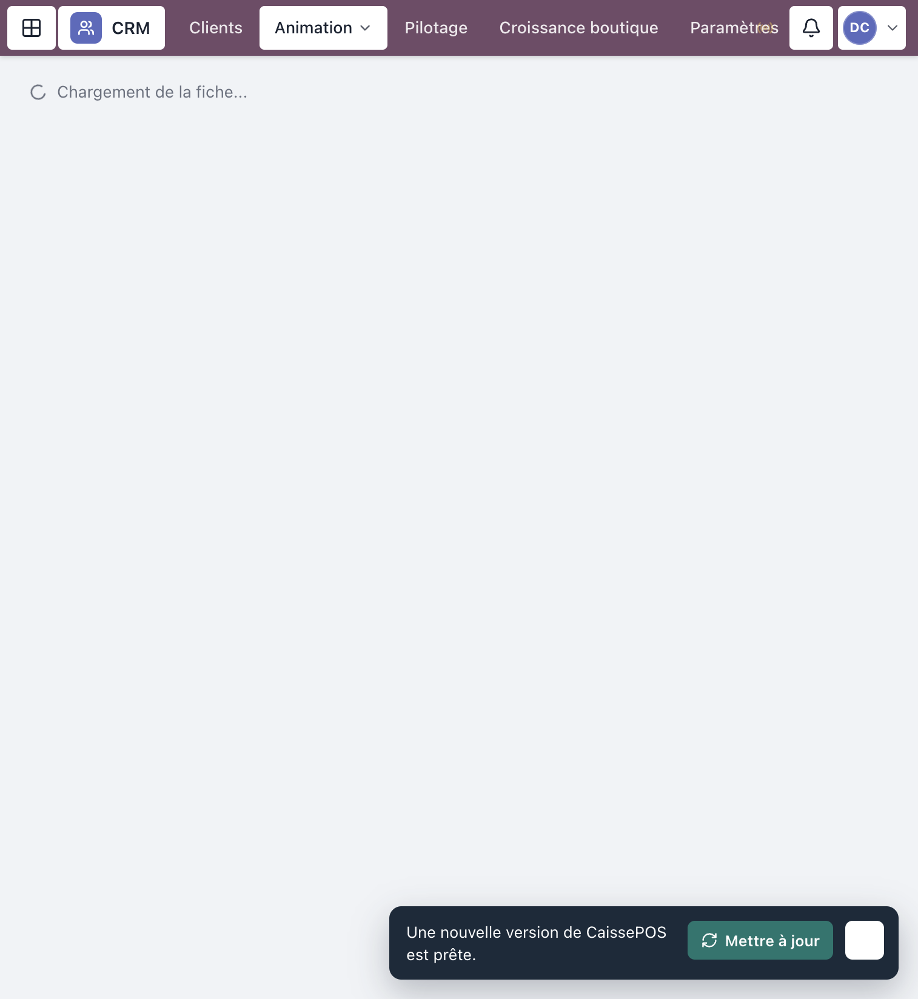
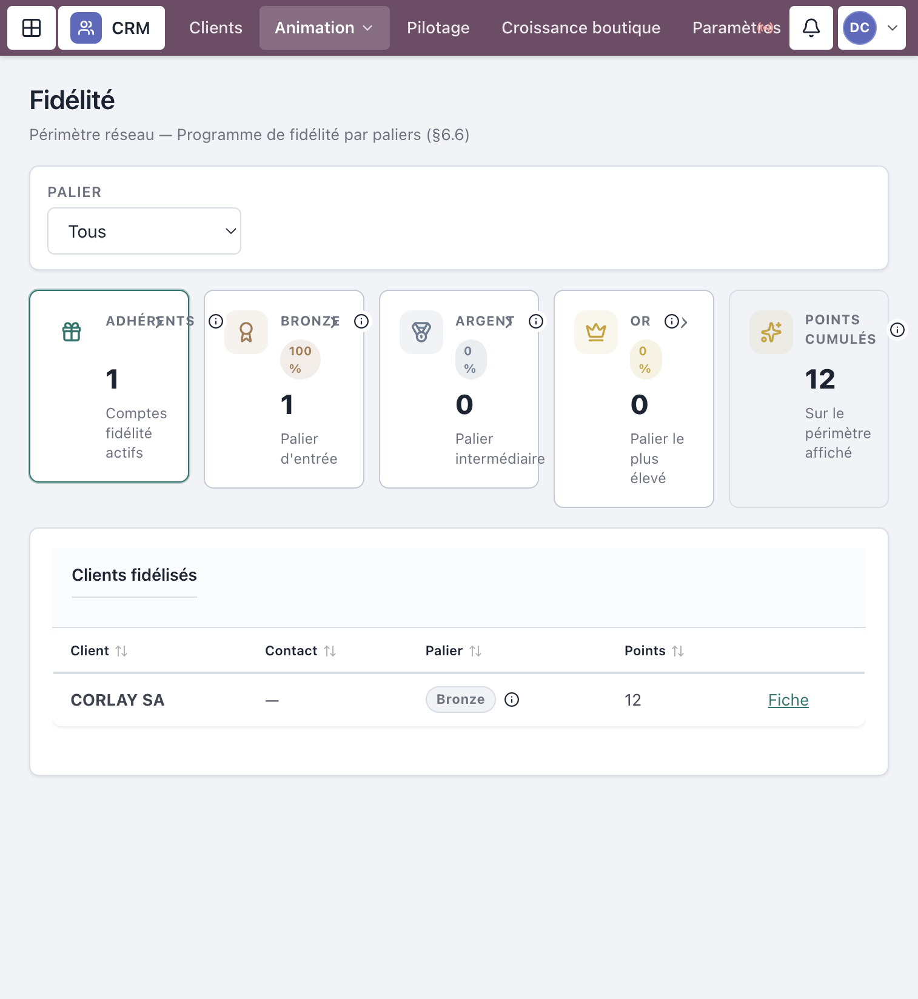
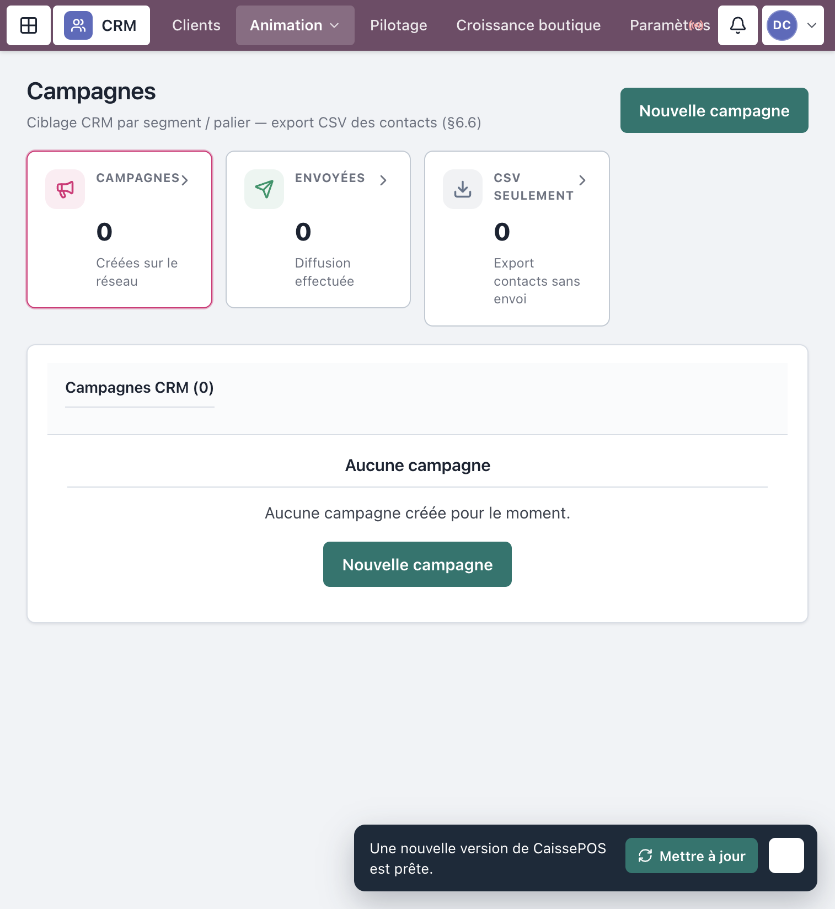

Progiciel Caisses & CRM — MAJOR AUTO PARTS
Public : Responsable commercial / CRM (et lecture
Direction / DAF selon droits)
Périmètre : fiches clients, interactions, fidélité, segmentation,
campagnes, pilotage (§6.6)
Captures réelles depuis l’application en production (
crm.majorautoparts.shop, comptedemo-crm). Les libellés correspondent exactement à l’interface.
| Rôle | Peut faire |
|---|---|
| Responsable CRM | Module complet : créer/modifier, fidélité, campagnes, paramètres |
| Caissier / Resp. boutique | Créer un client + tracer une interaction (pas d’admin campagnes) |
| DG / DAF / Central / Contrôle | Lecture (pilotage / campagnes selon profil) |
https://crm.majorautoparts.shop.demo-crm en
démo)./clients).
Figure 1 — Connexion
Menu Clients (/clients).

Figure 2 — Liste des clients
Route : /clients/:clientId.
Onglets typiques : Vue d’ensemble · Identité · Achats · Devis · Factures · Fidélité · Interactions.
Actions fréquentes :

Figure 3 — Fiche client
Menu Animation → Interactions
(/clients/interactions), ou depuis la fiche.
Le journal consolide l’historique réseau.

Figure 4 — Interactions CRM
Menu Animation → Fidélité
(/clients/fidelite).
Menu Animation → Segmentation
(/clients/segmentation).

Figure 5 — Fidélité ou segmentation
Menu Animation → Campagnes
(/campagnes).

Figure 6 — Campagnes
| Écran | Route | Usage |
|---|---|---|
| Pilotage CRM | /clients/pilotage |
KPIs segments, paliers, campagnes |
| Paramètres CRM | /clients/parametres |
Paliers Bronze/Argent/Or, segments — Enregistrer |
| Croissance boutique | /clients/croissance |
Funnel AARRR (souvent Direction / DAF) |
| Domaine | CRM | Autre module |
|---|---|---|
| Encaissement POS | Non | Caisse boutique |
| Stocks / achats | Non | Stocks & Achats |
| Réception / validation fonds | Non | Trésorerie centrale |
| Création utilisateurs | Non | Responsable SI |
| Symptôme | Que faire |
|---|---|
| Pas de bouton Nouveau client | Rôle lecture seule |
| Impossible de Créditer des points | Réservé Responsable CRM |
| Campagne absente du menu | Profil boutique sans campagnes |
| Segment inchangé | Utiliser Recalculer le segment après mise à jour |
Mot de passe seed : MotDePasse!123
| Identifiant | Rôle |
|---|---|
demo-crm |
Responsable CRM (manuel cible) |
demo-pos-caissier |
Création client + interaction boutique |
demo-daf |
Lecture / pilotage |
Document couvrant le module CRM §6.6.
MAJOR AUTO PARTS · CaissePOS